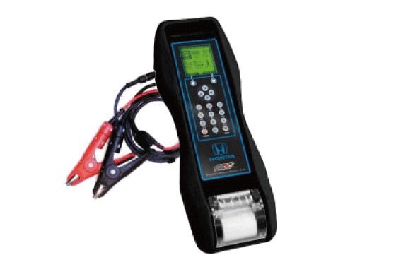
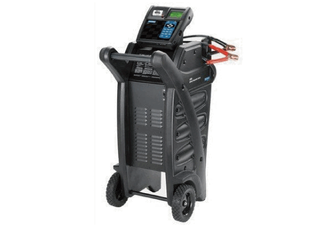

12 Volt Battery Test: Notes
Special Tools Required
| Image |
Description/Tool Number |
 Courtesy of HONDA, U.S.A., INC.
|
Honda ED-18 Battery Tester (12 Volt) INBED18V3H* |
 Courtesy of HONDA, U.S.A., INC.
|
Honda GR8 Battery Diagnostic Station with AST Module (12 Volt) MTRGR811ASTH* |
*Available through the Honda Tool and Equipment Program 888-424-6857